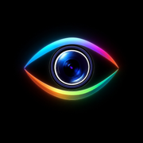
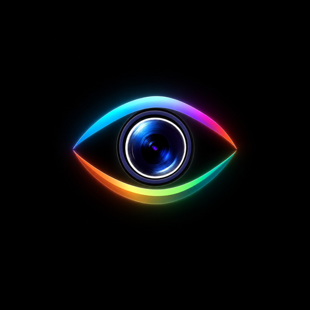

iOS apple-touch-icon · 180×180

PWA standard · 192×192
PWA hi-res · 512×512 (zobrazeno 200)
Android s 10 % paddingem · oříznuto do kruhu

Vlevo: iOS-style squircle ořez (jak ikonu vykreslí iPhone home screen).
Vpravo: Android kruhový mask (10% padding kolem oka zajišťuje, že se nic neořízne).